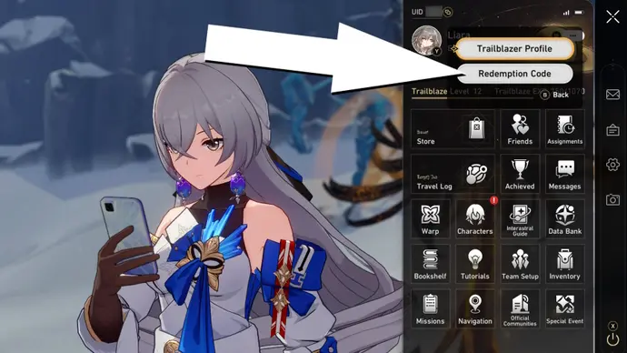
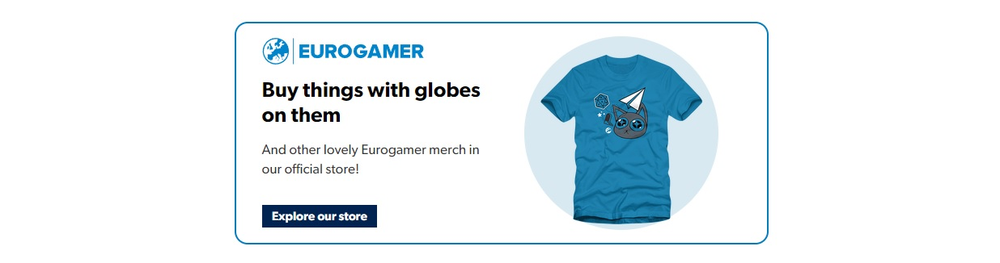

Stellar Jade is used to buy Star Passes needed to Warp for characters and Light Cone weapons. To celebrate its launch, we've currently got six codes for Honkai: Star Rail in May.
Look in your in-game mailbox after unlocking it to also claim your pre-registration rewards if you signed up before launch, which includes a 4-Star character and x18 Star Rail Passes. At launch, you can also take part in a login event to claim even more free rewards for your account from the 'Travel Log' menu every day. Until the 24th May, there are also Twitch drops (which include Stellar Jade) being rewarded for those who link their Twitch account to their Star Rail account and then watch any Star Rail-related livestream. We'll update this page when new codes are released, or any expire. To check if you code you're trying to use is valid, you can jump to our expired codes section.
 